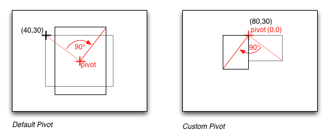
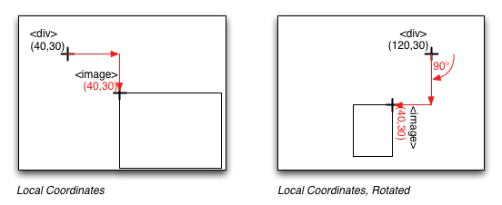

Coordinate Systems¶
- Coordinate Systems
- The Global Coordinate System
- Registration Points
- Rotation
- Local Coordinate Systems
- Vector Nodes
To determine where to display nodes, libavg uses a hierarchy of coordinate systems. The placement of a node on the screen is specified relative to the div node above that element. Since div nodes can themselves be children of other div nodes, a hierarchy of relative coordinate systems results.
The Global Coordinate System¶
Global coordinates have their origin in the upper left corner of the libavg window. Positive x values are to the right and positive y values down. This is typical of screen coordinate systems. Relative to the classic cartesian coordinate system, global coordinates in libavg have an inverted y axis.
Coordinates are specified in pixels.
Registration Points¶
With a few exceptions, the Registration Point of an element on the screen is it's upper left corner. This is the point that the pos attribute refers to.
globalcoords.py
1avg.ImageNode(pos=(40,30), size=(80,60),
2 href="rgb24-64x64.png", parent=rootNode)
The most notable exception is the words node. For words nodes with alignment="left", the registration point is close the upper left corner of the text rendered. Precisely, the vertical position corresponds to the height of the highest letter in the font used and the horizontal position may be off by a few pixels to make sure different letters appear to be at the same position. For words nodes with center and right alignments, the registration point is at the center or right of the node, respectively. The image to the right shows some left, center and right alignments and the corresponding registration points. Note that the left-aligned 'j' in the second line actually extends to the left of the registration point and the letters are positioned lower than expected to allow for glyphs with diacritics such as the german 'Ä'.
wordspos.py
1avg.WordsNode(pos=(10,10), width=70,
2 text="<i>Left-justified paragraph</i>",
3 parent=rootNode)
4avg.WordsNode(pos=(150,10), width=70, alignment="right",
5 text="Right-justified paragraph",
6 parent=rootNode)
7avg.WordsNode(pos=(80,80), width=70, alignment="center",
8 text="Centered paragraph",
9 parent=rootNode)
Rotation¶
If a node has an angle attribute different from zero, it is rotated. By default, it is rotated around it's center. Rotation is specified in radians and runs clockwise. A non-default pivot attribute causes the node to be rotated around the point specified as pivot. Pivots are specified in coordinates relative to the registration point of the node.
rotdefaultpivot.py
1avg.ImageNode(pos=(40,30), size=(80,60), href="rgb24-64x64.png",
2 angle=1.570, parent=rootNode)
rotcustompivot.py
1avg.ImageNode(pos=(80,30), size=(40,30), href="rgb24-64x64.png",
2 angle=1.570, pivot=(0,0), parent=rootNode)

Local Coordinate Systems¶
All nodes inside a DivNode are positioned relative to that node's registration point and rotated according to it's angle and pivot attributes:
localcoords.py
1divNode = avg.DivNode(pos=(40,30), parent=rootNode)
2avg.ImageNode(pos=(40,30), size=(80,60), href="rgb24-64x64.png",
3 parent=divNode)
localcoordsrot.py
1divNode = avg.DivNode(pos=(120,30), pivot=(0,0), angle=1.570,
2 parent=rootNode)
3avg.ImageNode(pos=(40,30), size=(40,30), href="rgb24-64x64.png",
4 parent=divNode)

Vector Nodes¶
Currently, most vector nodes don't have an angle attribute. Coordinates are specified directly. The exception is RectNode, which has an angle, but no pivot attribute. (This will be changed so angle and pivot handling is consistent.)